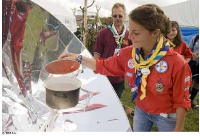

|
¿Qué hice hoy? |
<<
Volver |

| Finalidad 4 Scouts trabajan por un mundo donde se implementan las prácticas ambientales más apropiadas. Objetivos educativos: Mostrar conciencia de cómo nuestras acciones afectan al ambiente y medios alternativos para disminuir nuestro impacto. Edad: Menores de 11 años Resumen: Un juego fácil y divertido para poner a pensar a los Scout sobre cómo sus acciones afectan el ambiente. |
|
| Objetivo: Comprender que nuestras
acciones diarias tienen un impacto en el ambiente. Materiales y equipo: Una bola o balón. Preparación: Ninguna. Duración: De diez a veinte minutos Lugar: Lugar de reuniones. Antecedentes: Cada día hacemos cosas que causan un impacto en el ambiente. Algunas cosas que hacemos están bien para el ambiente y otras son malas para el ambiente. Muy a menudo actuamos sin siquiera saber cómo afectamos el ambiente. Este juego motiva a los Scout a pensar cómo nuestras acciones diarias afectan el mundo natural que nos rodea. |
|
| Guía paso a
paso de la actividad 1. Reúna al grupo en un círculo y dele la bola a una persona. 2. La persona con la bola inicia contando al grupo una cosa que hizo hoy que es buena para el ambiente. Cada uno debe explicar por qué sus acciones fueron buenas para el ambiente. Si tienen dificultad para identificar la acción, pídales que piensen en algo que hayan hecho hoy y decidan si fue bueno para el ambiente y de qué manera (pida a uno de los dirigentes tomar nota de las respuestas). 3. El Scout debe pasar la bola a otro participante que hará lo mismo. 4. Una vez que la bola ha dado la vuelta por todo el grupo, repita el juego pero con la pregunta ¿qué hice hoy que es malo para el ambiente? |
|
| Evaluación 1. Después de que todos han participado, discuta brevemente con el grupo usando las ideas a continuación. ¿Fue más fácil pensar en cosas buenas o malas para el ambiente? ¿Cuando hacen cosas todos los días, piensan en cómo estas afectarán al ambiente? ¿Piensan que es importante considerar al ambiente? ¿Qué diferencias existen en el grupo? ¿Por qué sucede esto? 2. Pida a cada Scout que escoja algo que hacen que es bueno para el ambiente y algo que podrían mejorar. 3. Hagan un mural con el grupo que muestre en una mitad las cosas que hacen que son buenas para el ambiente y en la otra mitad las que podrían mejorar. Actividades avanzadas 1. Pida a cada Scout cambiar sus acciones que pueden mejorar para la próxima reunión y compartir el plan con su familia, clase o amigos. 2. En la próxima reunión revisar el mural y hacer uno nuevo de cómo sus acciones han mejorado. 3. Use esta actividad como introducción para temas como energía renovable, reciclaje, conservación del agua y de la energía. © World
Scout Bureau Rue du Pré-Jérôme 5 PO Box 91 1211 Geneva 4 Plainpalais Switzerland Tel.: (+ 41 22) 705 10 10 Fax: (+ 41 22) 705 10 20 worldbureau@scout.org scout.org Reproduction is authorized to National Scout Organizations and Associations which are members of the World Organization of the Scout Movement. Credit for the source must be given. Se autoriza a las Organizaciones Scouts Nacionales y Asociaciones miembros de la Organización Mundial del Movimiento Scout a | |